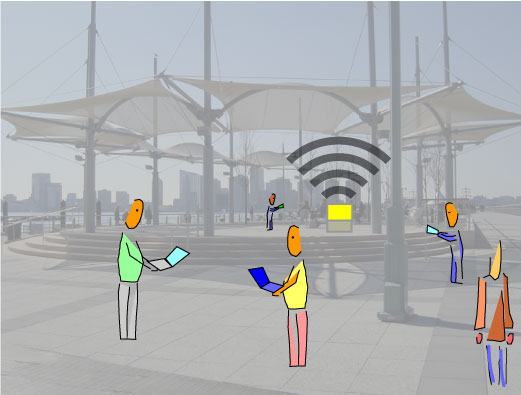

|
The proliferation of digital mobile communications devices - cell phones, WiFi, Bluetooth, and so on - saturates the space around us with data. As technology evangelists clamor for wirelessly extending the blanket of the global Internet everywhere, this WiFi network cloud is altering the uses and meanings of the public spaces, spaces that are now entangled with the bits and bytes of the "wireless web."
|

|
WiFi.ArtCache helps us reach into this space. It reveals the leaky, spongy abutment joining our data and our physical world by tracing out the contours of networks. Through the limited range of WiFi systems, the Caches 802.11 radio creates a spatially constrained range of influence. Rather than relying on 802.11 WiFi technology to extend the reach of the Internet into physical space, WiFi.ArtCache uses 802.11 in a reverse mode of operation it relies on its limited range to create a small, local network cloud.
more
Download the complete project documentation.
|
|